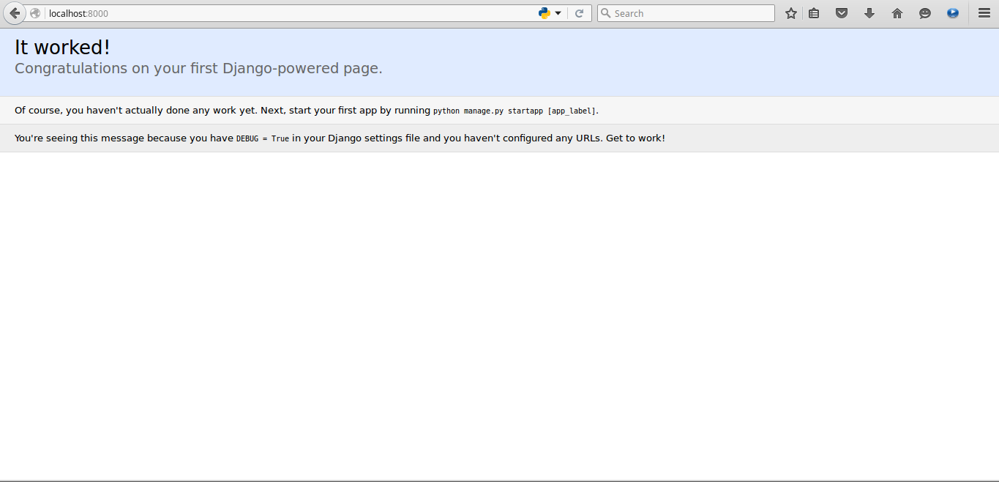

Django adalah salah satu web framework yang diperuntukkan Python dan masih menjadi nomor satu di dunia dan dunia kerja. Django memiliki sejumlah fitur handal yang dapat membuat pengguna web framework tersebut menjadi betah dengan Django. Django dikenal dengan kecepatannya dalam memulai sebuah proyek karena keunggulannya yang memiliki halaman admin khusus yang dinamakan Django Admin Page. Selain itu, Django memiliki class model yang dapat digunakan untuk berbagai keperluan seperi validasi form, membuat RESTful API, dan tentu saja membuat aplikasi web.
Beberapa package Django yang dapat membuat Anda lebih produktif antara lain:
Sedangkan fitur bawaan Django yang sangat disukai oleh pengguna Django sendiri adalah:
Untuk memasang Django di Ubuntu Linux, Anda dapat mengikuti beberapa perintah berikut ini:
$ sudo apt-get install python
$ sudo apt-get install python-pip
$ sudo pip install django
Untuk memasang Django di Windows, ada cukup banyak langkah yang harus dilalui agar Django dapat terpasang dengan baik di komputer Anda:
C:\> python setup.py install
Periksa apakah Django berhasil terpasang atau tidak dengan menjalankan perintah berikut di konsol:
$ django-admin.py --version
1.9.5
Sekarang saatnya kita membuat sebuah proyek aplikasi nilai online sederhana yang bernama academica:
$ django-admin.py startproject academica
Sebagai perkenalan dan permulaan, Anda sudah dapat menjalankan webserver bawaan Django untuk menjalakan proyek nilai online kita. Jalankan perintah berikut di dalam folder proyek:
$ cd academica
$ python manage.py runserver
Berikut adalah tampilan awal Django saat baru pertama kali dijalankan:

Sekarang mari kita lakukan migrasi tabel untuk membuat tabel - tabel default Django:
$ python manage.py migrate
Kemudian setelah selesai melakukan migrasi, saatnya membuat super user yang dapat menguasai seluruh sistem dengan perintah berikut:
$ python manage.py createsuperuser
Django menganut sistem apps, artinya setiap proyek Django memiliki sub-proyek dimana Anda dapat memisahkan kode - kode dari aplikasi web Anda ke berbagai aplikasi kecil yang dapat membantu Anda memudahkan pengorganisasian file dan folder. Sebuah Django apps umumnya memiliki beberapa file berikut saat pertama kali dibuat:
Sekarang kita akan mencoba membuat beberapa apps yang akan digunakan selama pelatihan ini. Jalankan perintah berikut di dalam folder academica di konsol:
$ python manage.py startapp tatausaha
$ python manage.py startapp kuliah
$ python manage.py startapp akses
$ python manage.py startapp homepage
Bila semuanya berhasil berjalan, maka Anda akan dapat melihat ada berbagai folder dengan nama apps yang telah kita jalankan menggunakan "python manage.py startapp". Sebelum kita lanjutkan ke langkah selanjutnya berikut adalah penjelasan untuk setiap apps yang akan kita kembangkan:
Di Django, setiap aplikasi yang akan kita sertakan atau kembangkan, harus didaftarkan terlebih dahulu ke file settings.py. Di tutorial ini, Anda harus mendaftarkan keempat nama apps yang sudah dibuat sebelumnya ke academica/settings.py. Tambahkan nama - nama apps tersebut di dalam list INSTALLED_APPS. Sebagai contoh, hal tersebut dilakukan untuk mendaftarkan apps agar dapat di-import oleh apps lain dan dapat mendeteksi adanya perubahan model pada apps untuk ditindaklanjuti hingga proses migrasi ke database.
.............................................................................
# SECURITY WARNING: don't run with debug turned on in production!
DEBUG = True
ALLOWED_HOSTS = []
# Application definition
INSTALLED_APPS = [
'django.contrib.admin',
'django.contrib.auth',
'django.contrib.contenttypes',
'django.contrib.sessions',
'django.contrib.messages',
'django.contrib.staticfiles',
'tatausaha',
'kuliah',
'homepage',
'akses',
]
MIDDLEWARE_CLASSES = [
'django.middleware.security.SecurityMiddleware',
'django.contrib.sessions.middleware.SessionMiddleware',
'django.middleware.common.CommonMiddleware',
'django.middleware.csrf.CsrfViewMiddleware',
'django.contrib.auth.middleware.AuthenticationMiddleware',
'django.contrib.auth.middleware.SessionAuthenticationMiddleware',
'django.contrib.messages.middleware.MessageMiddleware',
'django.middleware.clickjacking.XFrameOptionsMiddleware',
]
ROOT_URLCONF = 'academica.urls'
.............................................................................
Modul pertama selesai, silahkan lanjut ke modul kedua :D.